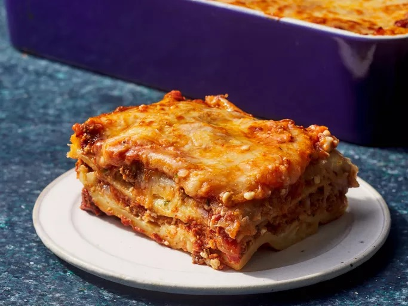

Lasagna Recipe

Description
This classic lasagna recipe is a hearty and comforting dish that is perfect for family dinners. It features layers of rich meat sauce, creamy ricotta cheese, and gooey mozzarella, all baked to perfection. Serve it with a side salad and garlic bread for a complete meal.
Ingredients
Directions
- Preheat oven to 375 degrees F (190 degrees C).
- In a large skillet, cook and stir ground beef, onion, and garlic in olive oil until well browned. Add crushed tomatoes, tomato paste, tomato sauce, and water. Season with sugar, basil, fennel seeds, Italian seasoning, 1 tablespoon salt, pepper, and 2 tablespoons parsley. Simmer, covered, for about 1 1/2 hours, stirring occasionally.
- Bring a large pot of lightly salted water to a boil. Cook lasagna noodles in boiling water for 8 to 10 minutes. Drain noodles, and rinse with cold water. In a mixing bowl, combine ricotta cheese with egg, remaining parsley, and 1/2 teaspoon salt.
- To assemble, spread 1 1/2 cups of meat sauce in the bottom of a 9x13 inch baking dish. Arrange 6 noodles lengthwise over meat sauce. Spread with one half of the ricotta cheese mixture. Top with a third of mozzarella cheese slices. Spoon 1 1/2 cups meat sauce over mozzarella, and sprinkle with 1/4 cup Parmesan cheese. Repeat layers, and top with remaining mozzarella and Parmesan cheese. Cover with foil: to prevent sticking, either spray foil with cooking spray, or make sure the foil does not touch the cheese.
- Bake in preheated oven for 25 minutes. Remove foil, and bake an additional 25 minutes. Cool for 15 minutes before serving.
Home